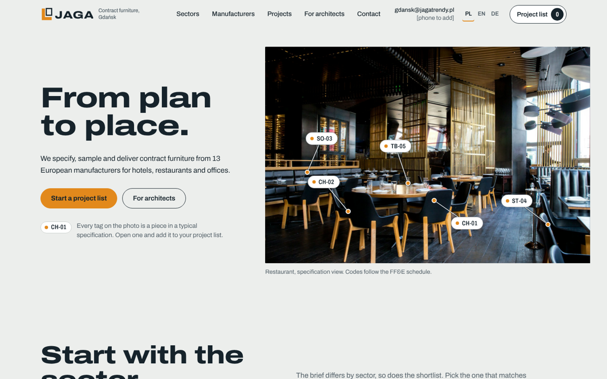

From plan to place.
JAGA is not a furniture shop and not a manufacturer. JAGA is the specification partner between architects and 13 European contract manufacturers. The new website should show exactly that. This page summarises the analysis, the competitor review and the new identity, and links to the three design directions.
What JAGA does today
Business
B2B furnisher for commercial interiors, based in Gdańsk (JAGA Trendy Sp. z o.o.). Advice on manufacturer choice and tenders, samples, CAD data, delivery through to handover. Commercial clients only.
Manufacturers
Pedrali, Magis, Plust, Thonet, Infiniti (café and restaurant), Paged, TON (wooden chairs), Alias, Softline (sofas), Wilkhahn, Profim, Bejot (office chairs), LAS (office systems).
References and markets
Hard Rock Cafe Warsaw (200+ seats), premium office Berlin (120+ workstations), boutique hotel Kraków (80+ pieces). Markets: Poland, Germany, international. Languages: Polish, English, German.
What works on the current site
- Clear B2B focus and a dedicated message for architects
- Three languages with a clean URL structure, fast Astro setup
- A strong list of manufacturers to build on
What the new site has to fix
- The manufacturer logos are AI-generated and faulty (for example "FUNRN HLURE" for Infiniti, a chair photo as the Thonet logo). That is a trademark and trust risk. Request official logos through the manufacturers' dealer press kits. The mockups set the brand names as type for now.
- The legal notice contains placeholders (Warszawa, zero registry numbers) and contradicts the contact page (Gdańsk)
- Generic stock photos, each used twice; no photos of completed projects
- Four competing accent colours, no brand typeface, logo only 112 px wide
- Claims such as "verified partners" or "24 h response" without proof; no phone number
- German text hard-coded into the English and Polish home pages
Competitors: 14 sites checked, 11 usable
All sites were opened live on 20 November 2026, captured as screenshots and reviewed. lino.cz, mesmetric.com and utilitydesign.co.uk blocked automated access (Cloudflare) and are not part of the review.
| Company | Model | Strength | Weakness | Idea for JAGA |
|---|---|---|---|---|
| .mddPoland, mdd.eu | Manufacturer, office and contract | Best hero in the field: one line, one button, a large interior photo. "For Architects" and "B2B" in the main menu | Single brand only; prices blur the B2B message | Project gallery crediting architect and photographer |
| Nowy StylPoland, nowystyl.com | Large manufacturer, 70+ countries | Navigation by space (hotel, restaurant, office), knowledge hub, partner zone for architects | Hero shows only a trade-fair campaign; menu hidden behind a burger | Browse by space, not only by product |
| 9designPoland, 9design.pl | Dealer and Warsaw showroom | Developed architect offer: service desk, 3D models, recommended architects, 3D tour | Retail look, discount pop-up, rendering errors | An architect service desk as its own service |
| AlaxCzech Republic, alax.cz | Dealer with a contract arm, sells Pedrali and Bejot | Segments (hotels, office, healthcare), PROFIZONE login, phone visible | Marketplace density, 12.8 px base font, mixed languages | A protected professional area with downloads |
| smowGermany, smow.de | Design retailer, 17 stores, B2B arm "smow works" | Lead time on every product card, bookable consultation, Trusted Shops rating | Consumer-led; B2B hidden in the footer | Show factory lead time and sample availability |
| architareGermany, architare.de | Premium dealer with office planning | Service navigation (office planning, New Work Lab), one line per brand | Visuals could not be assessed (styles did not load) | A one-sentence statement for every manufacturer |
| De ProjectinrichterNetherlands | Brand-independent project furnisher, 250+ brands | Quote list instead of a cart, phase model, certificates, circularity story | Template look; script font clashes with the body font | A project list: collect across all brands, send one request |
| Contract Furniture StoreUK | Specialist for European contract furniture | Entry by sector, "Send us your specification", client logos | Generic Shopify look, SEO filler text | Sector entry directly below the hero |
| Living EdgeAustralia | Dealer (Herman Miller and others) | Home page splits "Home" and "Professional" straight away | Content behind the gate, weak contrast | A permanent "For architects" entry in the header |
| Space FurnitureAustralia | Importer of Italian brands, showrooms | Services split into Trade, Commercial, Architectural; journal with projects | Home page leads with 50 % off | A clear service structure |
| StylecraftAustralia | Importer and contract specialist since 1953 | Sector tiles, projects with client names, a showroom per city | Outlet sale in the hero, no clear main button | References always with city, sector and scope |
Strengths and weaknesses across the market
What the best do right
- Professionals are picked up immediately: "For architects" sits in the main menu
- Entry by sector or space instead of by product category
- References with city, architect and scope as the main proof of trust
- Calm, photo-led design with one accent colour and one grotesque typeface
Where almost everyone is weak
- Discounts and sales in the hero damage the premium promise
- A shop cart instead of a request list, although projects are quoted
- B2B services hidden in the footer or behind a burger menu
- Interchangeable visuals: white, black and one yellow or orange
The gap JAGA can own
- None of the sites reviewed makes CAD/BIM downloads and a sample service prominent
- Nobody speaks the architects' language: item codes, FF&E schedules, tenders
- A project list across brands with a single request exists only in the Netherlands
The new identity
Positioning
The specification partner between architects and Europe's contract manufacturers. We specify, sample and deliver, from one source and across every brand.
Tagline
From plan to place. / Od planu do miejsca. / Vom Plan zum Platz.
Origin as the idea
Gdańsk is the world capital of amber. The amber orange is already in the old logo. Add the Baltic Sea as ink, the city's Gothic brick as a second colour and Baltic fog as the light ground.
Archivo is the only typeface. Its width carries the personality: Expanded 800 for headlines, normal width for running text, Condensed 600 for item codes and quantities.
Logo
A room corner from a floor plan in amber plus a square as a chair in elevation, next to JAGA set in Archivo Expanded. "Trendy" stays in the company name, not in the mark.
Motion
The scroll technique of your interior site: one lightweight scroll loop, parallax, lines that draw themselves, a progress line through the process, a horizontal sticky strip. No library, with a reduced-motion fallback.
Avoid
Discounts, all-caps labels above every heading, stock photos of meetings, unproven numbers and promises.
Three directions, one identity
All three use the same brand and the same content. They differ in mood and in their central moment. The photos are Unsplash placeholders until JAGA's own project photos are available. The mockups themselves are in English.

A: Spec
Light and precise, like a well-set furniture schedule. In the hero, spec tags sit directly on the chairs in the photo. A click shows type and manufacturer and adds the item to the project list. As you scroll, the items of a furniture schedule light up in the photo.
Open direction A
B: Bursztyn
Dark and cinematic, amber glowing on Baltic ink. The restaurant photo starts as a small window and opens to full width as you scroll. Sectors and manufacturers appear as large typographic lists with image previews.
Open direction B
C: Plan
The architect's drawing board, and the closest to your interior site. A restaurant floor plan draws itself, then 200 chair marks appear (Hard Rock Cafe Warsaw). Add floating material samples, manufacturers as sample cards in a horizontal strip and a project list as a drawer.
Open direction CRecommendation and next steps
My recommendation is A (Spec) as the base, with the floor-plan moment from C for the architects page. A sells most directly what sets JAGA apart from dealers, and it stays light and readable for tender work.
- Align the legal notice and contact details (Gdańsk, KRS, NIP, phone)
- Get official manufacturer logos and photos of the three reference projects
- Choose a direction and refine it (final logo artwork, sub-pages)
- Build it in the existing Astro project with PL/EN/DE and the project list as a lead form in Supabase